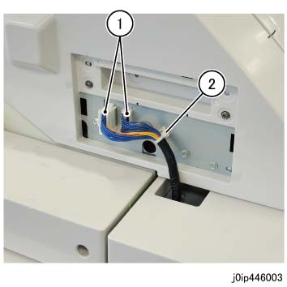
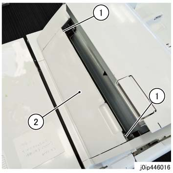
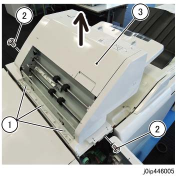

REP 46.1.1 Interposer 传输 组件 2 
参考 PL:PL 46.1
Removal

在...之后 turning 关闭/脱离 电源开关, 确认 the screen 显示 进入 关闭/脱离 和 the [电源 Saver] button 停止 blinking. 然后, 关闭 the 主 电源 开关, 确认 the [主 电源] 灯 具有 turned 关闭/脱离, 和 然后 关闭 the Breaker 和 unplug 电源插头.
拆卸 连接器 盖板. (PL 46.1)
断开连接器（x2）, 和 释放 线束. (图 1)
断开连接器（x2）.
释放 卡箍 的 线束.

(图 1) ip446003
打开 the 上方 滑槽.
拆卸 左侧 盖板. (图 2)
拆卸螺钉 (x2: round).
拆卸 左侧 盖板.

(图 2) ip446016
关闭 the 上方 滑槽.
打开 the 前面 门.
抬起 Interposer 传输 组件 2 upwards, 和 拆卸 it. (图 3)
拆卸螺钉（x3）.
拆卸螺钉（x2）.
抬起 Interposer 传输 组件 2 upwards, 和 拆卸 it.

(图 3) ip446005